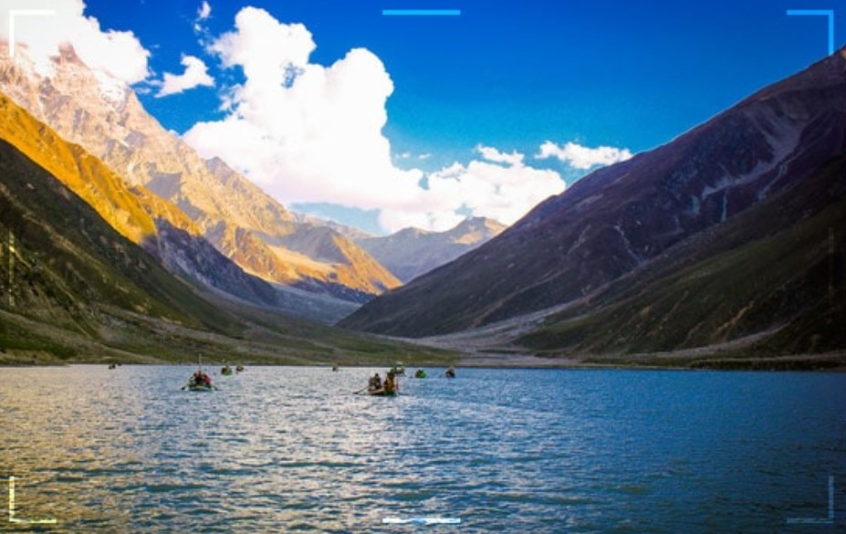
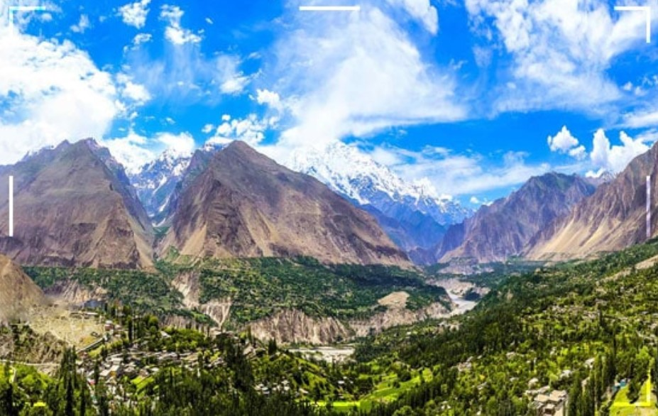
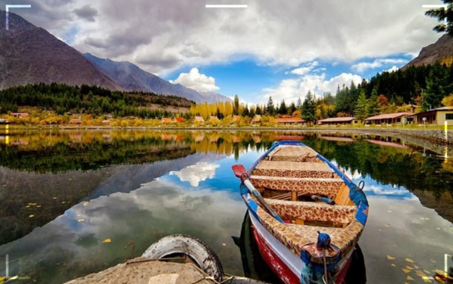
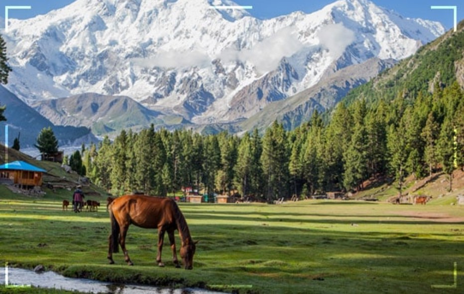
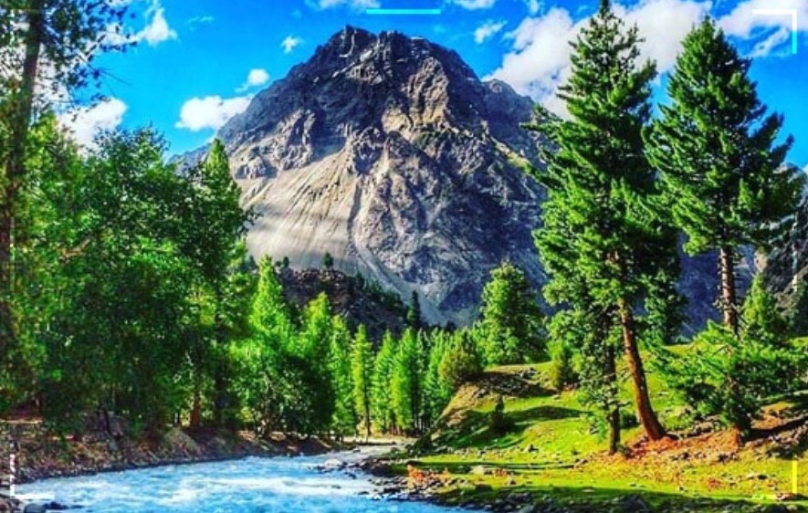

Places To Visit In Northern Areas Of Pakistan 2022-2023
The travelers from all around the world love to visit northern areas of Pakistan.
Govt. has lifted all the travel hurdles for visitors from all around the globe. As a result, for
summer of 2022, a huge number of wanderers from around the world are coming to travel the most
friendliness country, blessed with the heavenly landscape. During 2017 and 2018, British Backpackers
society listed the country with the best travel destinations in the World. Also, Pakistan was listed
in the list of best travel destinations to travel in 2019 by the Forbes magazines. As it was the
whole country listed for Best travel sites, here we have some of the most beautiful places to visit
in northern areas of Pakistan.
- Naran Kaghan
- Hunza Valley
- Skardu Valley
- Fairy Medows
- Naltar Valley
Naran Kaghan

On the top of the list for the best places in northern areas of Pakistan, we have
Naran Kaghan valley in the Himalayan Mountains of Khyber Pakhtunkhwa Pakistan. Naran valleys
stay open for few months to delivers some of the marvelous views from nature. As the valley
remains closed during winters from October till April due to heavy snowfall in northern areas of
Pakistan. As the road leading towards the valley gets block due to avalanches coming from the
mountains. However, Naran valley is one of the most famous traveling places in northern areas of
Pakistan amongst the local travelers. Every year, a huge number of visitors travel to this site
with their friends, families and loved ones to capture the best memories.
The Valley surrounded by the lush green mountains and deep alpine forest giving a beautiful
impact on travelers about Himalayan valleys. In the valley of Naran, there are a lot more to
discover like the fairy tale Saif Ul Malook Lake, Hike towards the
Ansoo Lake, Lulusar lake, The
Queen Dudipatsar Lake and lastly Babusar Top(4,173 m). So make
a plan this summers 2022 and get
on the journey to explore Naran valley among other best places in northern Pakistan.
Hunza Valley

Lies in the mountains of Northern Pakistan, the gigantic and colorful Hunza Valley
far in the Gilgit Baltistan region near to China border. Hunza Valley is one of the most
beautiful places to visit in the northern areas of Pakistan. For a lot of years now, Hunza
valley has been offering its wanderers the history and culture along with their colorful
traditions. Moreover to historical and traditional expects, Hunza valley is famous all around
the globe among the travelers for its immense natural landscape that can put a strong impact on
the mind of travelers. However, the valley has a lot more to discover.
Places To Visit In Hunza
Some of the best travel destinations to visit in Hunza Valley are Ganesh
Historical
settlement, Baltit,Altit Fort,Attahbad
Lake,Shimshal Valley,Passu cones and
glacier,Khunjerab Pass (Pak-China Border) and much more.
Ganesh village is a historical Silk Route settlement around 1000 years old, supposed to be the
First Silk Route settlement. Furthermore, Hunza valley is supposed to be the only destination in
the world from where one can witness the beauty of Four mighty Seven Thousanders peaks along
with some famous peaks like Ladyfinger peak (Bublimating – 6000 m) and
Hunza Peak (6,270 m).
In Hunza Valley, there are many of the beautiful trekking routes that can take travelers to
another world. Some of the most beautiful trekking routes are Shimshal pass,
Patundas trek,
Batura Glacier trek and many more.
So make sure this summer 2019 to travel for the exploring of this amazing place of Northern
areas of Pakistan with your friends or someone special to spend some amazing time.
Skardu

Here we go with the Gateway to the Karakorum mountain range on this list. Skardu
valley lies in the Karakorum Range of Gilgit Baltistan in far northern Pakistan. Being my most
favorite destination in the mountainous region of Pakistan, Skardu valley offers a lot to the
wanderers that one can never expect and ever forget after visiting such places in northern areas
of Pakistan. The road leading towards Skardu valley supposed to be the Eight wonder of World, as
the way offer some breathtaking views along with the danger of huge landslide every time it
receives rain. The valley has a rich culture and history with beautiful traditions. Likewise,
culture and traditions are similar to Tibet. However, Skardu is the Baltistan in Gilgit
Baltistan region, which is known as the Little Tibet.
Best Places To Visit In Skardu
Skardu valley has a lot to offer for the travelers to wander in the mountains to explore as many
of the places has still not been visited. From the mighty mountains to the world highest desert,
Skardu has everything for its lovers. Some of the best places to visit in Skardu valley are:
- Shangrila (Lower Kachura) Lake
- Upper Kachura Lake
- Kharpocho Fort
- Katpana Cold desert and Lake
- Shiger Cold Desert
- Shiger Valley and Fort
- Khaplu Valley and Palace
- Chaqchan Mosque
- Deosai National Park
However as the Skardu valley is Gateway to Karakorum Mountains, it has many of the world most
beautiful and astonishing trekking routes. Some most amazing ones are Snow Lake (Lukpe Lawo)
trek, K2 Base Camp (Concordia) trek,Banak La trek and much more.
Furthermore, Skardu host the
K2 (8,611 m),the second-highest peak of world,Broad peak (8,047 m),Gasherbrum 1 (8,080 m),
Gasherbrum 2 (8,035 m) and many more mighty and famous peaks. With all these mighty peaks in
Skardu, it becomes the dream for the mountaineers to conquer. Every year thousands of
mountaineers come to Pakistan to try climbing these mighty peaks in Skardu valley. So make sure
to have a journey in this place to visit northern areas of Pakistan this summer.
Fairy Meadows

Name given on the heavenly beauty in this piece of land, Fairy meadows lie in the Far Himalayan mountains of Gilgit Baltistan in the northern areas of Pakistan. The destination is famous because of the dark alpine forest in the surrounding. Or the lush green meadows in the center with the marvelous mighty Nanga Parbat peak (8,126 m) at the front make this on of the best places to visit in northern areas of Pakistan.
Nanga Parbat is known as The Killer Mountain with the name listed on the Second in Highest peak of Pakistan. On the other hand, the peak is the Ninth Largest in the world. In the Fairy meadows, one can explore some beautiful regions by trekking towards Biyal Camp and Base camp of Nanga Parbat.
Moreover,Biyal Camp is known to be the first camp of Killer Mountain. To reach this Fairyland of Pakistan, one has to take the adventurous Jeep ride on the World most Dangerous Jeep track and then trek for around 3 hours through dense woods. The destinations get close during winters because of the heavy snowfall making it difficult to live there. This summer, put this destination on your travel list among other best places to visit in northern areas of Pakistan.
Naltar Valley

Lastly, we got a Ski resort, Naltar valley in the Gilgit Baltistan of Northern Pakistan. The valley is full of lush greenery all around with astonishing views. One can visit this destination by taking a jeep ride from Normal village for around 45 minutes. However, the weather remains cold in Naltar valley as it has an elevation of 9,700 ft. It offers some beautiful destinations for travelers to visit.
Some of the best to explore are Naltar lake 1 (Satrangi),Pari lake,Blue Lake and much more. In summer, a huge number of travelers come to visit such destination to record in their memory. Furthermore, In winters, travelers enjoy the International Ski Festival in the valley. Get this amazing destiny on your list of travel for summer 2022.
However, these were some of the most famous and best travel destinations in northern Pakistan that travelers should visit this summer of 2022.
So set your backpack ready for 2022 and get on the journey towards these marvelous destinations of astonishing Landscapes in Northern areas of Pakistan.